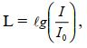
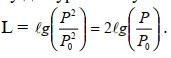
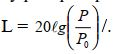
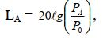
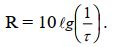
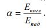

План
1. Шум. Звук. Звуковая волна и ее характеристики.
2. Восприятие звука. Звуковое давление. Интенсивность звука.
Звуковая мощность. Порог слышимости
3. Единицы уровня интенсивности шума. Децибел.
4. Средства и методы защиты от шума.
5. Звукоизоляция и звукопроницаемость.
Шум– это звук, неблагоприятно действующий на организм человека. Шум – это сочетание звуков различной частоты и интенсивности. Он представляет механические колебания упругой среды. Звуковая волна вызывает звуковое давление р, Па, характеризуется колебательной скоростью v,м/с, интенсивностью I, Вт/м2, и частотой- числом колебаний в с. f, Гц.
Звук– это колебания частиц относительно положения равновесия, причем скорость этих колебаний значительно меньше скорости распространения звуковых волн (скорости звука), которая зависит от упругих свойств, температуры и плотности среды.
Во время звуковых колебаний в воздухе образуются области пониженного и повышенного давления, которые определяют звуковое давление.
Звуковым давлением называется разность между мгновенным значением полного давления и средним давлением в невозмущенной среде.
При распространении звуковой волны в пространстве происходит перенос энергии. Количество переносимой энергии определяется интенсивностью звука. Средний поток энергии в какой-либо точке среды в единицу времени, отнесенный к единице площади поверхности, нормальной к направлению распространения волны, называетсяинтенсивностью звукав данной точке.
Источник шума характеризуетсязвуковой мощностьюР, определяемой общим количеством звуковой энергии, излучаемой источником шума в окружающее пространство в единицу времени.
Слуховой орган человека воспринимает звук от 20 до 20 000 Гц.
Важным для слухового восприятия является интервал от 45 до 10 000 Гц.
Наименьшая интенсивность I0и звуковое давление Р0, которые воспринимает человек, называютсяпорогом слышимости.Пороговые значения I0и Р0зависят от частоты звука. При частоте 1000 Гц звуковое давление
Р0= 2·10-5Па, I0= 10-12Вт/м2. При звуковом давлении 2·102Па и интенсив-ности звука 10 Вт/м2возникают болевые ощущения (болевой порог).
Между порогом слышимости и болевым порогом лежит область слышимости.
Разни-ца между болевым порогом и порогом слышимости велика. Поэтому Белл А.Г. предложил использовать логарифмическую шкалу.
Логарифмическая величина, характеризующая интенсивность шума или звука, получила назва-ние уровня интенсивности L шума или звука, которая измеряется в безраз-мерных единицах белах (Б):
где I – интенсивность звука в данной точке;
I0– интенсивность звука, соответствующая порогу слышимости.
Интенсивность звука пропорциональная квадрату звукового давления, поэтому для уровня звукового давления можно записать:
Ухо человека реагирует на величину в 10 раз меньшую, чем бел, поэтому распространение получила единица децибел (дБ), равна 0,1 Б, тогда
Уровнями интенсивности шума оперируют при выполнении акустических расчетов, а уровнями звукового давления – при измерении шума и оценке его воздействия на человека, так как наш орган слуха чувствителен не к интенсивности звука, а к среднеквадратичному давлению.
Неблагоприятное воздействие шума на человека зависит от уровня звукового давления, частотного диапазона шума и времени воздействия.
Источник шума можно представить в виде зависимостей уровней звукового давления от частоты (частотным спектром шума, или просто спектром). Спектры шумов могут быть линейчатыми (дискретными), сплошными и смешанными. Большинство источников шума на предприятиях имеют смешанный или сплошной спектр.
Таблица 9 – Уровни звукового давления различных источников шума
Источник шума | Звуковое давление, Па | Уровень звукового давления, дБ |
Шепот на расстоянии 0,3 мм | 2·10-3 | 40 |
Речь средней громкости на расстоянии 1 м |
2·10-2…1·10-1 |
60…74 |
Металлорежущие, ткацкие и деревообра-батывающие станки (на рабочем месте) | 2·10-1…2 | 80…100 |
Пневмопрессы, пневмоклепка на расстоянии 1 м |
2·10 |
120 |
Реактивные двигатели на расстоянии 2…3 м от выхлопа |
Свыше 2·102 |
Свыше 140 |
При измерении и анализе шумов, при проведении акустических расчетов, весь диапазон частот разбивают на полосы частот определенной ширины. Полоса частот, где отношение верхней граничной частоты f2к нижней f1равно 2, называется октавой. Еслиf232 1,26, то ширина полосыf1
равна1/3октавы. Для гигиенических целей шумы исследуют обычно в октавах, а для технических – в1/3-октавных полосах частот. Характеристикой каждой полосы частот является среднегеометрическая частотаfcг, которая для октавы вычисляется по выражениюfcu=f1f2, а для1/3октавы – по выражениюfcг=62f1.
Широкополосные шумы имеют непрерывный спектр шириной более одной октавы, а в спектре тональных шумов слышатся отдельные тона.
По временным характеристикам шумы делятся на постоянные (за 8 ч изменяется не более чем на 5 дБА) и непостоянные (за 8 ч меняется более чем на 5 дБА). Непостоянные шумы бывают колеблющиеся во времени, прерывистые и импульсные (длительность 1 с).
Звуки малой частоты человек воспринимает как менее громкие чем звуки большой частоты той же интенсивности. Введено понятие уровня громкости, который отсчитывается от условного нулевого порога. Единицей уровня громкости является фон. Он соответствует разности уровней интенсивности в 1 Б эталонного звука при частоте 1000 Гц. На частоте 1000 Гц уровни громкости (в фонах) совпадают с уровнями звукового давления (в децибелах). Уровень громкости является физиологической характеристикой звуковых колебаний. С помощью специальных физиологических исследований были построены кривые равной громкости, по которым можно определить уровень громкости любого звука с заданным уровнем звукового давления.
Шум является общебиологическим раздражителем и может влиять на все органы человека. Наиболее полно изучено влияние шума на слуховой орган человека. Ежедневное воздействие интенсивного шума приводит ктугоухости, т.е. постепенной потере слуха на оба уха. Первоначально тугоухость нас-тупает в области высоких частот (4000 Гц), а затем –в области низких частот.
При очень большом звуковом давлении может произойти разрыв барабанной перепонки. Наиболее вреден высокочастотный шум 1000…4000 Гц.
Шум вызывает повышенную утомляемость, общую слабость, раздражительность, апатию, ослабление памяти, потливость, остроту зрения, повышается внутричерепное давление, нарушаются функции желудочнокишечного тракта, обменные процессы в организме и т.п.
Всемирная организация здравоохранения (ВОЗ) отмечает, что к шуму чувствительны такие операции, как слежение, сбор информации и мышление.
Нормы шума на рабочих местах регламентируются ГОСТ 12.1.003 – 83 «ССБТ. Шум. Общие требования безопасности».
Для постоянных шумов нормирование ведется по предельному спектру шума.Предельным спектром называется совокупность нормативных уровней звукового давления в восьми октавных полосах частот со среднегеометрическими частотами 63, 125, 250, 500, 1000, 2000, 4000, 8000 Гц. Каждый предельный спектр обозначается цифрой, которая соответствует допустимому уровню шума (дБ) в октавной полосе со среднегеометрической частотой 1000 Гц. Например, ПС-85 означает, что в этом предельном спектре допустимый уровень шума в октавной полосе со среднегеометрической частотой 1000 Гц равен 85 дБ.
Для ориентировочной оценки ГОСТ допускает за характеристику постоянного шума на рабочем месте принимать уровень звука в дБА, измеряемой по шкале «А» шумомера и определяемой по формуле
 где РА– среднеквадратичное звуковое давление с учетом коррекции
шумомера, Па;
Р0= 2·10-5– пороговое среднеквадратичное звуковое давление, Па.
Часто шум имеет непостоянный характер и для него введено понятиеэквивалентный(по энергии) уровень звука Lэкв, характеризующий среднее значение энергии звука в дБА.
Для широкополосного шума допустимые уровни звукового давления в октавных полосах частот, уровни звука и эквивалентные уровни звука приведены ниже.
Рабочие места | Уровни звукового давления в дБ в октавных полосах со среднегеометрическими частотами, Гц | Уровни звука и эквив. уровни звука, дБА | |||||||
63 | 125 | 250 | 500 | 1000 | 2000 | 4000 | 8000 | ||
Рабочие места и рабочие зоны в поме- щениях и на территории | 99 | 92 | 86 | 83 | 80 | 78 | 76 | 74 | 85 |
Стандарт предписывает зоны с уровнем звука выше 85 дБА обозначать специальными знаками, а работающих в этих зонах снабжать СИЗ. Стандарт запрещает даже кратковременное пребывание в зонах звукового давления свыше 135 дБ в любой октавной полосе.
Средства и методы защиты от шума
Классификация средств и методов защиты от шума приведена в ГОСТ 12.1.029 – 80 2 «ССБТ. Средства и методы защиты от шума. Классификация».
В первую очередь используются коллективные средства защиты. Они снижают шум в источнике его возникновения (более эффективный путь) и на пути его распространения (часто малоэффективный путь). Средства и методы защиты от шума:архитектурно планировочные(акустическое решение планировок зданий и планов объектов, рациональное размещение оборудования и рабочих мест, создание защитных зон);акустические средства(средства звукоизоляции, звукопоглощения, виброизоляции, демпфирования, глушители шума);организационно-технические методы(применение малошумных технологических процессов, дистанционное управление, совершенствование технологии ремонта, рациональный режим труда и отдыха).
Уменьшают шум тщательность изготовления и конструкция деталей, смазки, новые материалы, улучшением аэродинамических характеристик, звукоизоляцией и глушителями и т.п.
Глушителиаэродинамического шума бывают абсорбционными (затухание шума в порах звукопоглощающего вещества), реактивными (использование эффекта отражения звука в результате образования «волновой пробки») и комбинированными. Реактивные глушители имеют соединенные между собой камеры, расширения и сужения, резонансные углубления, экраны и т.п.
Снижение шума за счет демпфирования (глушение) добиваются покрытием их излучающей поверхности демпфирующими материалами, имеющими большое внутреннее трение: мастики, специальные виды войлока, линолеума и др.
Звукоизоляцияявляется наиболее эффективным методом снижения шума на пути его распространения. С помощью звукоизолирующих преград, отражающих звуковую волну, можно снизить уровень шума на 30…40 дБ. Однако звуковая энергия не только отражается от ограждения, но и проникает через него, что вызывает колебание ограждения, которое само становится источником шума. Чем больше поверхностная плотность ограждения, тем труднее его привести в колебательное состояние, следовательно, тем выше его звукоизолирующая способность: металлы, бетон, дерево, плотные пластмассы и т.п.
Изолирующую способность характеризуютзвукопроницаемостью, это отношение звуковой энергии, прошедшей через ограждение, к падающей на него. Величина, обратная звукопроницаемости называется звукоизоляцией, (дБ), она связана со звукопроницаемостью зависимостью:
Величина звукоизоляции зависит: от размеров ограждений, его физикомеханических характеристик, звукопоглощения в помещении и др., СНиП II12-77.
Снижение шума методом звукоизоляции основано на переходе звуковых колебаний частиц воздуха в теплоту вследствие потерь на трение в порах звукопоглощающего материала. Чем больше звуковой энергии поглощается, тем меньше ее отражается обратно в помещение. Для снижения шума в помещении проводят егоакустическую обработку,нанося звукопоглощающие материалы на внутренние поверхности, а также размещая в помещении штучные звукопоглотители.
Звукопоглощение характеризуетсякоэффициентом звукопоглощения,представляющим собой отношение поглощенной звуковой энергии Епоглк падающей Епад:
Приа= 0 вся энергия отражается без поглощения, приа= 1 вся энергия поглощается (эффект «открытого окна»).азависит от частоты звуковых волн и угла их падения на конструкцию.
Звукопоглощающие устройства бывают пористыми, пористоволокнистыми, с экраном, мембранные, слоистые, резонансные и объемные. Их эффективность определяется акустическими расчетами с учетом требований СНиП II-12-77. Для большего эффекта рекомендуется облицовывать не менее 60 % общей площади ограждающих поверхностей, а штучные звукопоглотители – располагать как можно ближе к источнику шума.
Акустическая обработка снижает уровень шума на 6…8 дБ, иногда и на 10…12 дБ. Она должна обязательно применяться в шумных цехах: вычислительных центрах, на машзаводах и др.
Шум можно снизить и методом «антизвука», т.е. созданием равного по величине и противоположного по фазе звука. В результате интерференции основного звука и «антизвука» в помещении можно создать зоны тишины.
СИЗ применяют, если коллективные средства защиты не обеспечивают снижение шума до допустимых уровней. СИЗ снижают уровень звука на 10…45 дБ, причем значительное глушение шума наблюдается в области высоких частот, которые наиболее опасны для человека. К ним относятся: противошумные наушники, противошумные шлемы и каски, костюмы и др.
1. Что такое шум? Какими параметрами характеризуется шум?
2. Опишите звуки, которые воспринимает слуховой орган человека.
Порог слышимости. Болевой порог. Тугоухость.
3. Что такое децибел и октава?
4. Каковы средства и методы защиты от шума?
5. Назовите и опишите звукопоглощающие устройства.